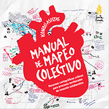

Pesquisador e docente do Departamento de Geociências da Universidade Regional do Cariri (URCA), em Juazeiro do Norte (CE), Jörn Seemann (2003) propõe visões alternativas de cartografia como linguagem, que não se relacionam necessariamente aos mapas convencionais ou ao espaço geográfico.
Para Seemann, o conceito de mapa pode representar um meio de expressão, na medida em que pode servir para visualizar processos do pensamento humano: os mapas recriam e reproduzem fenômenos ou ideias, representam uma maneira de ver e se constituem em uma sequência de ações.
Dessa forma, abre-se a possibilidade de propor diferentes cartografias, que, por exemplo, representem visões de mundo, ações cotidianas, processos de cognição humana etc. – e que auxiliem na formação de cidadãos e leitores críticos do espaço e suas representações. “Em vez de se restringir aos mapas ‘técnicos’ e ao apoio dos ‘tecnocratas’, a abordagem considera o planejamento participativo um princípio fundamental para a ação: os mapas servem como instrumento para aprender a ler e decifrar o território”, diz Seemann.
A construção de um mapa constitui uma maneira de elaborar relatos coletivos em torno de um tema ou interesse comum e possibilita a visualização de encontros e consensos sem eliminar a diversidade de atores, demandas e potenciais. Baixe aqui o manual para a construção de mapas coletivos passo a passo , elaborado pelo coletivo argentino Iconoclasistas.
Para o geógrafo Milton Santos (2002), “o território não é apenas o conjunto dos sistemas naturais e de sistemas de coisas superpostas. O território tem que ser entendido como o território usado, não o território em si. O território usado é o chão mais a identidade. A identidade é o sentimento de pertencer àquilo que nos pertence. O território é o fundamento do trabalho, o lugar da residência, das trocas materiais e espirituais e do exercício da vida”.
Na perspectiva da educação integral, busca-se garantir o pleno desenvolvimento de crianças, adolescentes e jovens e se reconhece que isso só é possível quando se observam diferentes dimensões – física, afetiva, cognitiva, ética, estética e política –, em uma proposta multidimensional e integrada. Para essa concepção, o Guia Políticas de Educação Integral diz que é preciso considerar o sujeito inserido em um contexto de relações.
De acordo com o Guia, numa sociedade democrática, conhecer o lugar onde se vive, poder circular e se apropriar dos espaços públicos e participar da vida comunitária, visando ao bem comum, são aspectos importantes na educação das novas gerações.
Não por acaso, o Programa Mais Educação (2010), indutor de políticas de educação integral no Brasil, propõe “pensarmos e praticarmos a educação integral a partir do binômio educação–território, considerando a formação dos sujeitos da educação como inseparável das relações e transformações ocorridas no ambiente, a partir do entendimento do caráter territorial dos processos educacionais na escola e na cidade”.
O Mais Educação defende o conceito de território educativo, entendido como um território intencionalmente educador: “Neste contexto, nosso pressuposto será o de considerar este espaço/território não apenas como uma mera estrutura física [...], mas como lugar de vida, de relações. Não como algo passivo, continente, mas como conteúdo e sujeito destas experiências, que as qualifica, interferindo na vida de quem os ocupam”.
Dessa maneira, a cartografia de um território na perspectiva da educação integral vai levar em conta características, potenciais e desafios ao mesmo tempo espaciais, humanos, políticos, sociais, econômicos e educativos.
Nesse sentido, a cartografia pode ser entendida como uma linguagem que orienta a leitura e a produção de sentidos sobre a realidade dos territórios e que, além das relações espaciais, pode investigar relações de poder, espaços profissionais, relações econômicas, espaços formativos, movimentos culturais, história local, história pessoal e também desejos e projetos de vida (FUNDAÇÃO ITAÚ SOCIAL; CENPEC, 2013).
“A cartografia não se restringe às marcações visíveis do espaço físico, como na geografia. Um território é um conjunto de lugares nos quais as pessoas existem, atuam, convivem com outras pessoas e objetos, produzindo realidades. Aqui, a cartografia é um instrumento de registro que adentra as dimensões do tempo, da memória, das lembranças, das reminiscências, das experiências, das subjetividades, dos desejos.”
Conheça o coletivo norte-americano Radical Cartography, que trabalha com cartografia como um método de visualização de problemas político-sociais.
Assista à entrevista com Rayssa Fleury, arquiteta, urbanista e assessora tecnológica do Programa Jovens Urbanos, sobre as possibilidades da cartografia territorial como prática educativa que promove a conscientização dos jovens sobre seus direitos políticos e sociais
Saiba mais sobre os conceitos de educação integral e território na temática Educação integral: um conceito em busca de novos sentidos.